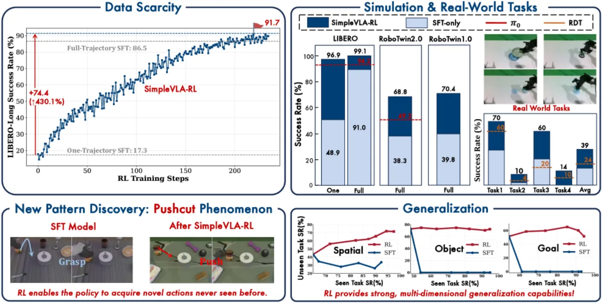
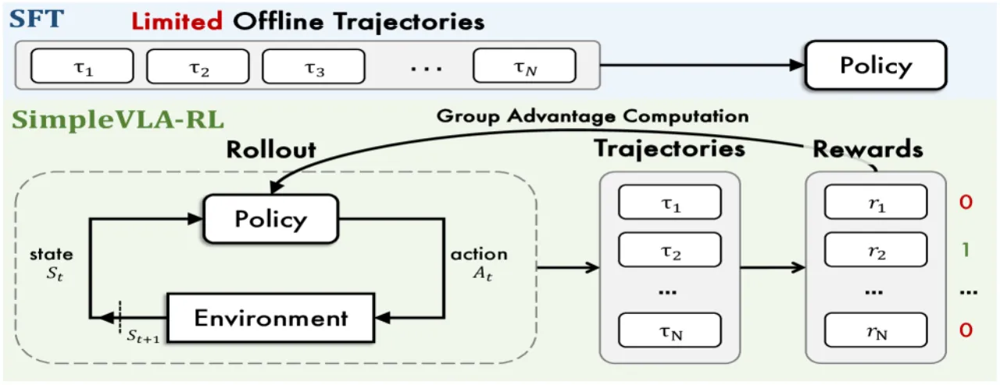
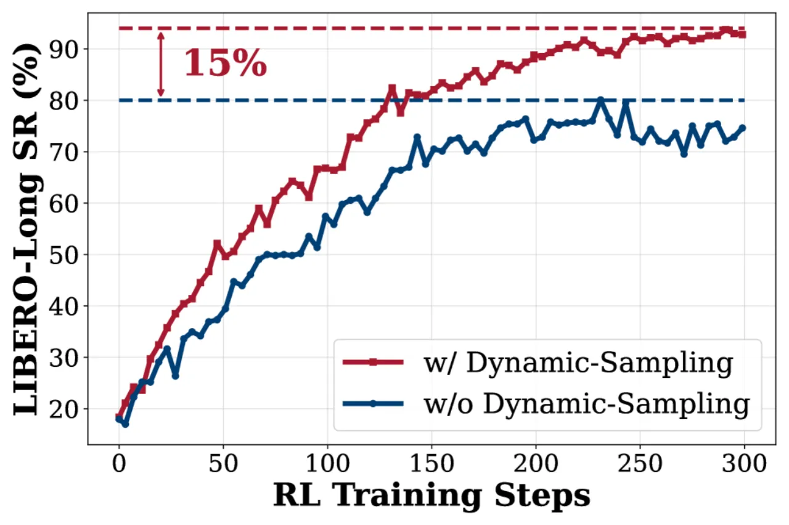
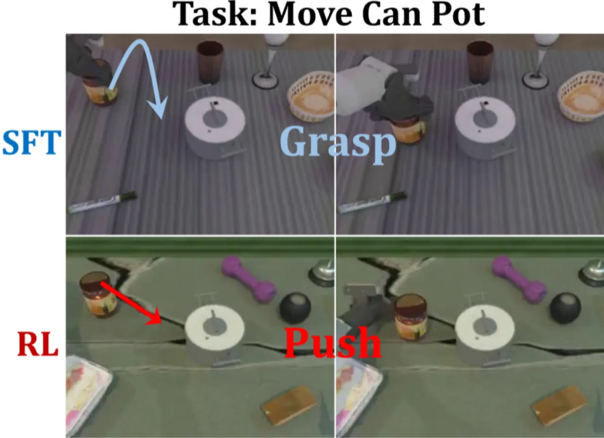
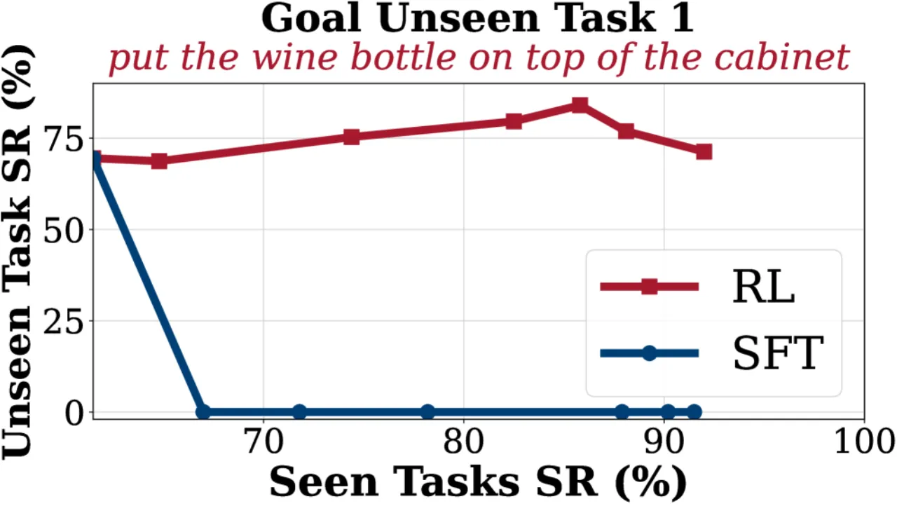

SimpleVLA-RL 将专为大语言模型设计的 veRL 框架扩展至视觉-语言-动作（VLA）模型，通过简单的二值结果奖励即可在 LIBERO 和 RoboTwin 等多个基准上实现显著性能提升，并在无真实机器人数据的条件下完成 sim-to-real 迁移。
VLA 模型在机器人操控领域展现出强大潜力，但面临两大核心挑战：一是人工操作轨迹数据稀缺——大量高质量示范数据难以获取；二是分布偏移下泛化能力有限——在监督微调（SFT）范式下，模型面对未见场景时表现急剧下降。已有工作尝试将强化学习（RL）引入 VLA，但受限于在线训练效率低下和缺乏可扩展的并行化框架，实际应用受阻。
"我们提出 SimpleVLA-RL，通过 VLA 专用的轨迹采样、可扩展并行化、多环境渲染和优化的损失计算，将 veRL 框架扩展至 VLA 模型，实现高效在线 RL 训练。"

SimpleVLA-RL 以 OpenVLA-OFT 为骨干，将 veRL（专为 LLM RL 训练设计的分布式框架）扩展至具有闭环环境交互需求的 VLA 场景。核心创新在于三个 VLA 专属机制：交互式轨迹采样、结果奖励建模和探索增强策略。

与 LLM 生成文本不同，VLA 需要在环境中持续闭环执行动作并获取新观测。SimpleVLA-RL 通过温度采样（T=1.6）对动作 token 进行多样化采样，每组生成 G 条轨迹并使用二值奖励（成功=1，失败=0）统一标注，避免了繁琐的过程奖励设计。
采用简单二值结果奖励（outcome reward），成功轨迹奖励为 1，失败轨迹奖励为 0，奖励在整条轨迹的所有 token 上均匀分配。该设计无需人工设计复杂的中间奖励信号，显著降低了奖励工程成本，同时仍能提供有效的学习信号。

实验在三个主要基准上进行：LIBERO（4 个子任务）、RoboTwin 1.0（4 个任务）和 RoboTwin 2.0（12 个任务，按操作时长分为短/中/长三类），并另设真实机器人 sim-to-real 迁移实验（4 个任务）。基线包括 OpenVLA-OFT（SFT）、π₀ 和 RDT。
| 模型 | Spatial | Object | Goal | Long | 平均 |
|---|---|---|---|---|---|
| OpenVLA-OFT（SFT 基线） | 95.3 | 90.6 | 86.5 | 91.0 | 91.0 |
| w/ SimpleVLA-RL | 99.1 | 99.2 | 98.5 | 99.1 | 99.1 |
| 提升 (Δ) | +3.8 | +8.6 | +12.0 | +8.1 | +8.1 |
| 模型 | 短时长均值 | 中时长均值 | 长时长均值 | 总体均值 |
|---|---|---|---|---|
| RDT | — | — | — | 33.3 |
| π₀ | 45.5 | 58.8 | 43.3 | 49.2 |
| OpenVLA-OFT（SFT） | 21.3 | 47.1 | 46.5 | 38.3 |
| w/ SimpleVLA-RL | 64.9 | 72.5 | 69.0 | 68.8 |
| 提升 (Δ) | +43.6 | +25.4 | +22.4 | +30.5 |
| 模型 | Stack Bowls | Place Empty Cup | Pick Bottle | Click Bell | 平均 |
|---|---|---|---|---|---|
| RDT | 60.0 | 4.0 | 10.0 | 20.0 | 23.5 |
| OpenVLA-OFT | 38.0 | 2.0 | 0.0 | 30.0 | 17.5 |
| w/ SimpleVLA-RL | 70.0 | 10.0 | 14.0 | 60.0 | 38.5 |
在每个任务仅提供 一条示范轨迹 的极端稀缺条件下，RL 训练仍能将 LIBERO-Long 成功率从 17.3%（SFT）提升至 91.7%，接近全量数据 SFT 的 96.9%，展示出强大的数据效率优势。
| 设置 | Spatial | Object | Goal | Long |
|---|---|---|---|---|
| 单轨迹 SFT | 54.9 | 59.6 | 17.3 | 48.9 |
| 单轨迹 SFT + RL | 98.7 | 98.8 | 91.7 | 96.9 |
| 提升 (Δ) | +43.8 | +39.2 | +74.4 | +48.0 |

消融实验验证了三项探索增强措施均对性能有正向贡献：去除任一组件均导致成功率下降。此外，模型先验能力是 RL 奏效的前提——当基础模型初始成功率为 0% 时，RL 训练无法产生有效梯度，无法收敛；基础模型需具备约 7–10% 的初始成功率，RL 才能有效发挥作用（见 Table 7）。

RL 训练的有效性高度依赖基础模型的初始能力。当基础模型对某任务的初始成功率为 0% 时，无法生成任何成功轨迹，梯度流完全中断，RL 训练无法带来任何提升。实验显示，模型需具备约 7–10% 的基线成功率，RL 才开始奏效（Table 7）。
当前框架仅使用二值结果奖励（outcome-only rewards），这要求每批 rollout 中必须包含至少部分成功轨迹，方能产生有效的学习信号。对于极难任务，初始成功率极低，导致 RL 收益有限，甚至无效。
尽管框架已实现无真实机器人数据的 sim-to-real 迁移（平均 38.5%），但仿真训练中视觉渲染、物理特性与真实环境的差距（sim-to-real gap）仍不可忽视，可能限制迁移性能上限，尤其对感知精度要求较高的任务（如 Pick Bottle 仅 14.0%）。
在线 RL 训练要求持续与模拟环境交互生成轨迹，相比 SFT 的离线训练，计算资源消耗显著增加。论文未报告具体训练时间或 GPU 成本，实际部署的计算可行性尚不明确。
本文以 Technical Report 形式发布，目前未提及开源代码仓库或预训练模型权重，社区复现和后续研究的便利性有待提升。